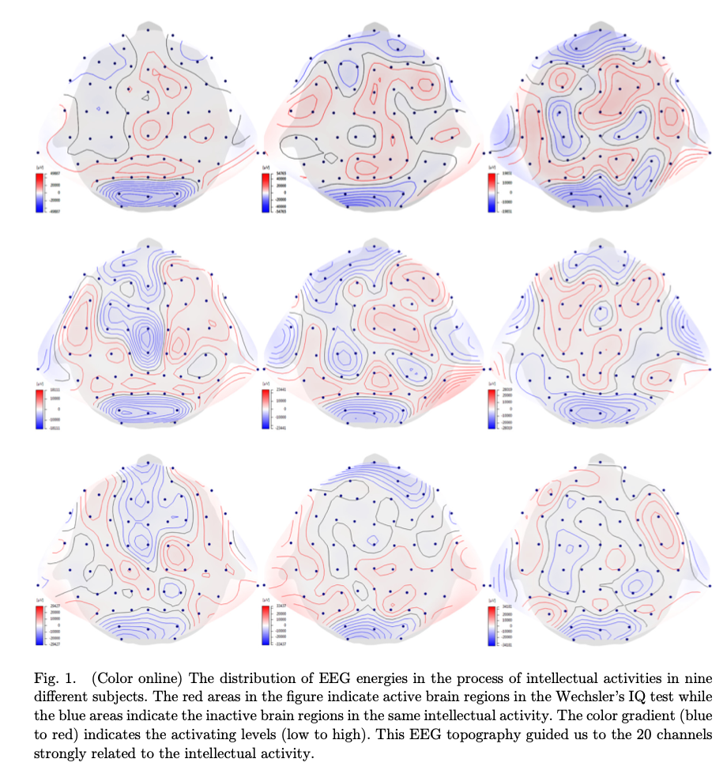
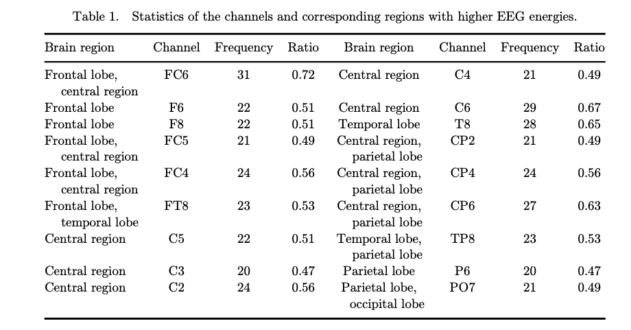
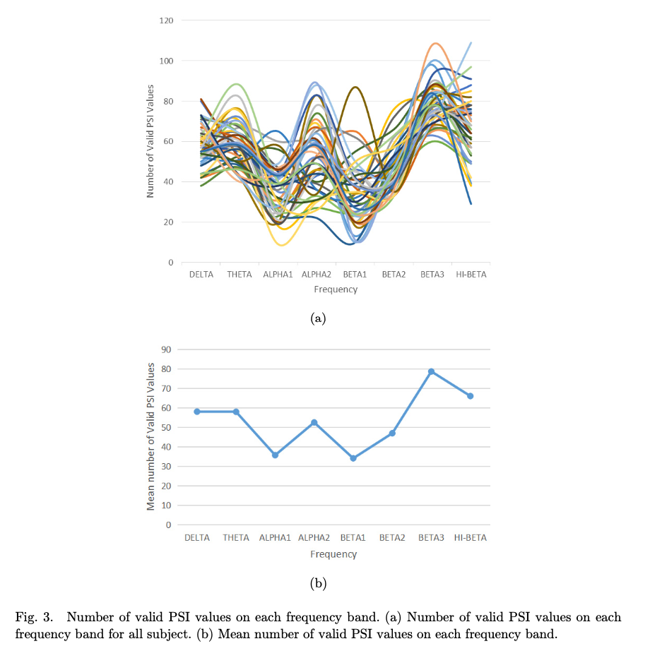
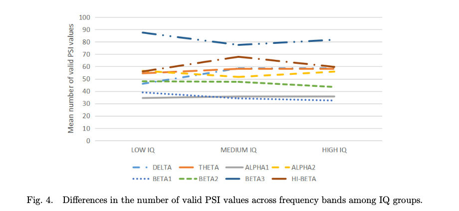
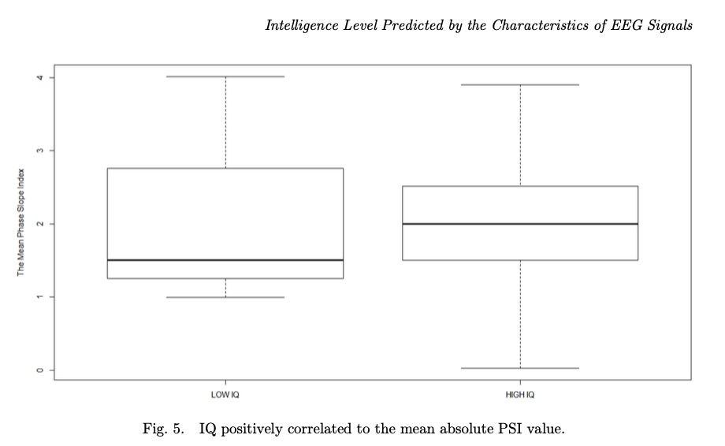
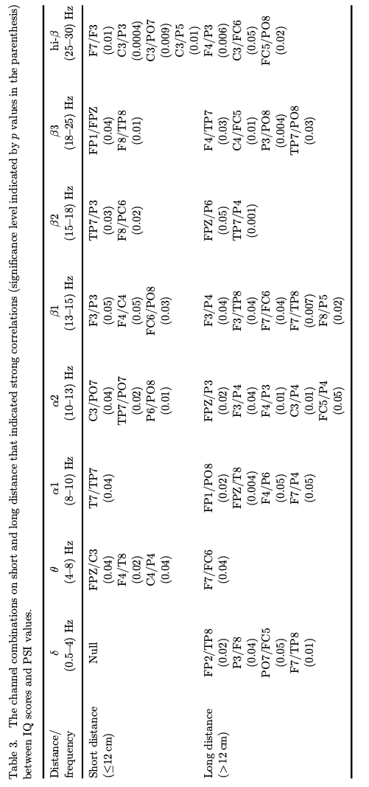
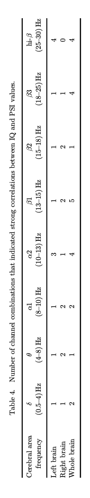

INTELLIGENCE LEVEL MIGHT BE PREDICTED BY THE CHARACTERISTICS OF EEG SIGNALS AT SPECIFIC FREQUENCIES AND BRAIN REGIONS
뇌가 소비하는 에너지와 지능적 확동을 할 때 뇌의 부위별 정보의 흐름에 대한 강도로 각자의 지능 척도를 설명할 수 있을 것이다. 이 가정을 증명하기 위해 18~25살 사이에 43명의 학생들을 피험자로 모집했다. 그들의 intelligence quotients(IQ)는 Wechsler Adult Intelligence Scale(WAIS)에 의해 측정되었다. 그러면서 Neuroscan system을 통해 그들의 EEG signal을 동시에 기록했다. 전체 에너지와 EEG 신호 패턴의 분포는 Curry 8.0을 통해 얻었다. 뇌 부위별 정보 흐름의 강도는 Phase Slope Index(PSI)를 통해 측정했다. 20개의 채널들을 통해 190개의 결합이 데이터 분석에 선택되었다. 결과는 IQ 지수가 EEG 에너지와 반비례하고 특정 채널 쌍에서 얻은 특정 주파수 영역에서 측정한 정보 흐름의 강도와는 정비례 하였다. 특히 긴 채널쌍일 수록 높은 연관성을 보였다.
Keywords: Electroencephalogram; intelligence quotients; phase slope index; information flow; efficiency; correlation.
1. Introduction
오랜 기간동안 다양한 규칙들을 통해 인간 지능에 대한 연구가 폭 넓게 고려되어왔다. 지능을 측정하기 위해서는 두가지 classic한 방법이 있는데 Raven’s Standard Progressive Matrices(RSPM)과 Weschsler Adult Intelligence Scale(WAIS)가 있다. 두 방법 모두 지능을 정량적으로 측정하여 흔히 말하는 IQ값을 계산한다. 이전 연구들은 IQ가 시간과 주파수 도메인의 brain wave 특정들과 neural network의 복잡성 그리고 뇌의 정보처리 효율성과 관련이 있다고 보여주고 있다. Discriminant 분석과 multi-variate regression의 결과들은 EEG와 IQ의 연광성에 영향을 주는 EEG의 특성이 다음과 같다고 말한다 : EEG phase > EEG coherence > EEG amplitude asymmetry > absolutepower > relative power and power ratios; Frontal과 posterior cortical 영역의 phase의 delay와 함께 EEG의 일관성 감소는 IQ와 강한 연관성이 있다. 뇌의 구조적 연결은 diffusion tensor imaging과 살아있거나 거의 죽은 개인에 있어서 비슷한 특성을 보이는 structural magnetic resonance imaging(MRI)을 통해 증명할 수 있다. 구조적 연결성 너머 각각의 뇌 부위들은 기능적으로 연결되어있다. EEG 신호의 coherence와 특정 부위에 따른 fMRI의 연관성을 측정함으로써 뇌 부위와 연관된 공유되는 기능들을 증명할 수 있다. 최근 brain wave 연구들은 IQ가 brain network의 복잡성과 효율성에 정비례하는 연관성이 있다고 말한다. Thatcher는 brain resources의 효율적인 분포를 다루어 뇌와 지능지수와의 연광성을 묘사하는 특정한 모델을 제안했다. 의심할 여지없이 brain wave 분야에서 뇌의 기능적 연결은 앞으로 주목받을 내용인것은 확실하다. 이번 논문에서 우리는 IQ와 시간과 주파수 도메인에서 EEG 특성(특히 정보의 흐름)의 연관성을 이 둘사이의 잠재적 연결성을 발견하기 위해 연구했다.
\(\)
2. Materials and Methods
2.1. Wechsler’s IQ test and EEG signal acquisition
18명의 남자와 25명의 여자로 이루어진 총 43명의 학생들은 모두 18~25세로 실험에 피험자로 모집되었다. 모든 피험자들은 신경계 질병 기록이 없으며 실험 24시간 안에 어떤 약도 섭취하지 않았다. 실험 전에 피험자들은 실험에 대해 세부사항까지 명확하게 인지하고 있었다. 기록 과정은 피험자들이 취하지 않고 차분한 상태에서 눈을 뜬 상태에서 시작했다. Wechsler’s IQ test는 60초동안 피험자들에게 빈 화면을 보여준 뒤에 시작되었다. test 동안 10-20시스템을 따르며 서로다른 위치에 부착된 59개의 electrode들로부터 EEG 신호를 기록했다. Postauricular mastoid가 reference spot으로 사용되었다. Sampling Frequency는 1000Hz로 진행했고 impedance값은 $10 \text{K}\Omega$ 아래 값으로 조절하며 수행했다. Wechsler test가 끝나고 피험자들은 차분한 상태가 되도록 하며 EEG recording을 1분 더 진행했다. 실험 과정은 E-Prime program으로 우리가 직접 만든 것으로 통제되었다. 전체 EEG 신호의 길이는 약 25분정도이다.
2.2 Data Preprocessing
Original EEG신호들은 눈 깜빡임, 팔다리 움직임 등등으로 인해 쉽게 오염될 수 있다. 그러므로 원 신호에서 잡음과 artifact들을 제거하는 것은 필수적이다. 전처리는 Matlab에서 진행되었다.
2.3 Fast Fourier transform
전처리된 EEG 신호들은 푸리에 변환을 진행했다. $\delta, \theta, \alpha, \beta$ band에 분포된 패턴들을 관찰하고 분석했다.
2.4 Phase Slope Index (PSI)
Phase Slope Index (PSI)는 Nolte가 2008년도에 제안했다. PSI는 두개의 time series 사이의 cross spectrum phase의 slope를 기반으로 계산되었다. 두 상호작용하는 시스템들에서 정해진 시간의 delay는 다른 방식으로 주파수 성분에 영향을 줄것이다. 따라서 여러 time series에서 연관성을 감지가 가능하도록 만들어야 한다. PSI는 연관이 없는 신호들에 반응을 보이지 않기 때문에 PSI가 연관성 있는 신호들 사이에 delay 연관성을 표현하기 더 적잘하다. 이번 연구에서 두피에 분포한 20개의 채널들을 선택해 PSI value를 계산해따. 모든 들을 2개씩 짝지음으로써 190개의 결함이 형성되었다. 각 결합에서의 PSI value는 정보의 흐름을 나타내는 특성이 될것이다. 이번 실험에서 관찰된 신호는 다음과 같이 표현할 수 있다:
\[\begin{align} y(t) = x(t) + B\eta(t) \end{align}\]$x(t)$는 time series에서 정보를 표현한다; $\eta(t)$는 M개의 독립적인 noise source들이다, B는 2 x M의 형태로 잡은과 특정할 채널의 혼합체이다.
두 채널들의 cross spectrum은 아래와 같이 표현한다:
\[\begin{align} S_{ij}(f)=\left\langle \left( \hat{y}_i(f)\hat{y}^*_j(f) \right) \right\rangle \end{align}\]여기서 $\left\langle\right\rangle$은 expectation operator이다. 최종적으로 PSI는 다음과 같이 정의된다:
\[\begin{align} \tilde\psi_{ij}=\Im\left(\sum_{f\in F}C^*_{ij}(f)C_{ij}(f+\delta f)\right)\\ C_{ij}(f) = \dfrac{S_{ij}(f)}{\sqrt{S_{ii}(f)S_{jj}(f)}} \end{align}\]여기서 $C_{ij}(f)$는 complexity correlation이고 S는 cross-spectrum matrix이고 $\delta f$는 frequency resolution이고 $\Im(\cdot)$은 Imaginary part만 남기는 부분이고 $F$는 모든 주파수 영역을 뜻한다.
Average slope인 $\tilde{\psi}_{ij}$는 아래와 같이 표현할 수 있다: \(\begin{align} \tilde{\psi}_{ij}=\sum_{f\in F}\alpha_{ij}(f)\alpha_{ij}(f+\delta f)\sin{(\Phi(f+\delta f)-\Phi(f))} \end{align}\)
여기서 $\alpha_{ij}(f)=|C_{ij}(f)|$는 해당 주파수의 가중치이다. Phase spectrum을 smooth하기 위해 $\sin{(\Phi(f+\delta f)-\Phi(f))}\approx \Phi(f+\delta f)-\Phi(f)$로 추정하므로 $\tilde\Psi_{ij}$는 slope의 가중치 평균이다. 마지막으로 $\tilde\Psi$는 std값을 통해 표준화한다.
\[\begin{align} \Psi = \dfrac{\tilde\Psi}{\text{std}(\tilde\Psi)} \end{align}\]여기서 $\text{std}(\tilde\Psi)$는 Jackknife 방법으로 평가했다. \(\) 만약 $\tilde\Psi>0$인 경우 정보 흐름의 방향은 i -> j 방향이고 그렇지 않다면 j->i일 것이다. 이번 연구에서 정보 흐름의 방향은 $\Psi$ 절댓값이 2보다 큰 경우에만 타당하도록 고려했다. \(\) 이번 연구를 위해 190개의 채널 결합들의 PSI 값들은 아래 주파수 band에 따라 계산되었다.
\[\begin{align*} \delta \quad &band (1-4Hz)\\ \theta \quad &band (4-8Hz)\\ \alpha 1 \quad &band (8-19Hz)\\ \alpha 2 \quad &band (10-13Hz)\\ \beta 1 \quad &band (13-15Hz)\\ \beta 2 \quad &band (15-18Hz)\\ \beta 3 \quad &band (18-25Hz)\\ \text{hi-}\beta \quad &band (25-30Hz) \end{align*}\]2.5 EEG signal stadardization
통제할 수 없는 많은 요인들 예를들어 두피의 두께, 머리카락의 밀도, impedance 등등 때문에 EEG 신호 수집에 어려움이 있기 때문에 신호의 질이 영향을 받는다. 통제할 수 없는 요인들의 영향을 제거하기 위해 수집된 EEG 신호들을 아래와 같이 표준화 한다.
\[\begin{align} X_n=\dfrac{x_n}{m} \end{align}\]여기서 $x_n$ 은 특정 채널의 EEG 신호이고 $m$은 해당 채널의 mean of absolute value이고 $X_n$은 표준화된 EEG신호이다.
\(\)
3. Results
3.1 The EEG energy distribution in the process of intellectual activity
Curry 8.0으로 그린 EEG topography로부터 뇌 활동 영역의 분포와 위치는 피험자마다 다르다는 것을 알 수 있다. EEG 에너지들은 18개의 eletrode들에 집중되어있다. 31명의 피험자들은 FC6에서 높은 EEG energy를 보였고 피험자 절반은 다음 17개의 electrode에서 높은 EEG energy를 보였다 : F6, F8, FC5, Fc4, FT8, C5, C3, C2, C4, C6, T8, CP2, CP4, CP6, TP8, P6, PO7.


3.2 IQ and EEG energy
머리 전체에서 나온 total EEG energy는 모든 피험자에 대해 계산되었다. 결과는 EEG energy와 IQ의 연관성을 특정짓기 위해 분석되었다. 아래 사진으로부터 total EEG energy의 평균값은 낮을수록 IQ가 높은 경향을 보였다. 즉 EEG energy와 IQ는 반비례한다는 것이다.

3.3 IQ and EEG frequency
FFT의 결과에서는 지능적 활동 과정에서 $\alpha, \beta$ band에서 EEG 신호의 amplitude가 높게 측정되었다. $\alpha$ band는 보통 사람에게 있어서 EEG의 기본적인 rythm으로 피험자가 취하지 않은 상태이고 차분한 상태일 때 감지된다. $\beta$ wave는 사람이 자극을 받은 뒤에 나타나는 wave로 뇌가 집중이다 고도의 긴장상태 임을 뜻한다. \(\) 모든 참여자들은 $\alpha, \beta$ band에서 높은 amplitude를 보였다. 피험자들은 그들의 WAIS 점수를 통해 high, medium 그리고 low IQ group으로 나뉘었다. ANOVA 분석을 수행하여 각 IQ group간에 $\alpha, \beta$ band에서의 의미있는 차이를 찾도록 헸다($P<0.05$). 의미있는 값은 $\alpha, \beta, \text{both}\ \alpha\ \text{and}\ \beta$ band 각각에서 $P(\alpha), P(\beta), P(\alpha+\beta)$로 표기하도록 했다. 결과는 $P(\alpha), P(\beta), P(\alpha+\beta)$ 값들이 모두 0.05보다 큰 값을 보인다는 것이고 이것은 서로 다른 IQ group 끼리 $\alpha, \beta$ band에서 의미있는 차이가 없다는 것을 나타낸다.

3.4 Number of valid PSIs in each frequency band
피험자들의 PSI 값들을 각 주파수에 따라 표준화 한 다음, PSI의 절댓값이 2보다 큰 경우에만 타당한 PSI 값으로 고려했다. 타당한 PSI 값의 수는 각 주파수 영역에 따라 피험자마다 달랐다. 가장 큰 타당한 PSI의 평균값은 $\beta 3$ band에서 나타났으며 이는 $\beta 3$가 IQ와 높은 연관성을 가질 수 있다는 것을 뜻한다.

하지만 각 IQ group에서 수행한 ANOVA 분석은 통계적으로 타당한 PSI 값에는 유의미한 차이가 없다고 말하고 있다.

타당한 PSI 값은 brain network complexity로 고려할 수 있다. 이 결과는 brain network의 complexity와 지능적 성능과는 연관이 없다는 것을 말하고 있다.
3.5 IQ and the mean value of PSI
Absolute PSI value들은 low와 high IQ group간에 상당한 차이가 있다. PSI의 variation값은 brain network의 복잡성과 인간 신경계에서 정보전달 메카니즘 과의 연관성을 나타낼 수 있다. 아래 그림에서 low IQ group과 high IQ group 간에 absolute PSI value 차이를 나타냈다.

3.6 IQ and information flow path of different distance
정보가 흐르는 거리는 long(>12cm)와 short(<=12cm) group으로 나누었다. t-test를 통해 서로 다른 거리를 갖는 채널 쌍에서 얻은 정보의 흐름과 IQ 간의 연관성을 계산했다. 그 결과에서 high IQ group과 low IQ group 각각에서 얻은 PSI value들이 충분한 차이를 보였는데 짧은 거리를 갖는 채널 결합들은 17개에서 긴 거리를 갖는 채널 결합들에서는 24개에서 충분한 결과를 얻었다.

이러한 결과들은 특히 긴 거리를 갖는 채널 쌍에서 두 채널간의 소통의 효율이 IQ와 연관이 있다고 말한다. PSI 값들은 좌반구냐 우반구냐에 따라서도 IQ group마다 달랐다. 좌반구에서는 한개의 채널쌍이 alpha1 band에서, 2개의 채널쌍이 alpha2 band에서 그리고 4개의 채널쌍이 hi-beta band에서 high IQ group과 low IQ group이 유의미한 차이(p<0.05)를 보였다. 우반구에서는 2개의 채널쌍이 theta band에서, 1개의 채널쌍이 alpha1 band에서, 2개의 채널쌍이 alpha2 band에서, 2개의 채널쌍이 beta1 band에서 3개의 채널쌍이 beta3 band에서 그리고 1개의 채널쌍이 hi-beta band에서 유의미한 차이를 보였다. 전체적으로 좌반구와 우반구에서 각각 7개와 11개의 채널쌍이 IQ와 PSI 값 사이의 연관성을 강하게 나타냈다.

3.7 Multivariate linear regression
High IQ group과 low IQ group 사이에 거리와 주파수에 따라 유의미한 차이를 보이는 채널쌍은 41개이다. 그들 중에서 5개의 채널 쌍(C3/PO7, F7/TP8, F7/FC6, F3/P4 and F4/P3)이 반복적으로 나타났다. 우리는 step-wise multivariate linear regresesion을 5개의 채널쌍에서 다른 주파수를 적용하여 PSI값들로 진행했다. 그렇게 해서 만들어진 식은 아래와 같다.
\[\begin{align} Y=6.75*X1-19.63*X2+263.58*X3-252.04*X4-14.36*X5+135.26 \end{align}\]여기서
| variable | PSI |
|---|---|
| X1 | hi-beta of C3/PO7 |
| X2 | beta1 of F7/TP8 |
| X3 | beta1 of F7/FC6 |
| X4 | beta1 of F3/P4 |
| X5 | hi-beta of F4/P3 |
에 대한 변수이고 Y는 IQ score에 대한 변수이다. R, R2 그리고 adjusted R2 값들은 각각 0.96, 0.93, 0.86이고 이것은 이 방정식이 상대적으로 믿을만하게 IQ score를 예측하는 모델이라는 것을 말한다.
Discussion
이번 연구에서 지능적 활동 과정에서 EEG 특성을 연구했다. 그 결과 EEG signal의 energy는 두피에 비균등하게 분포하고 있다는 것을 알았다. High energy는 FC6에서 높은 주파수로 나타났고 다른 위치로는 F6, F8, FC5, FC4, FT8, C5, C3, C2, C4, C6, T8, CP2, CP4, CP6, TP8, P6, PO7이 있다. 이전 연구를 통해 알고 있듯이 뇌의 좌반구는 음성 처리와 논리적 사고의 중추이다. 즉 continuous, ordered and analytic task를 다루는 역할을 하며 사람의 speech, reading, writing, calculation, arrangement, classification, language recall and time feeling등이 있다. 우뇌는 image thinking과 divergent thinking의 중추이다. 우뇌는 주로 perception, image memory, complex perceptual model cognition, spatial relationship cognition, imagination, music, emotion 등등 불연속적이고 확산과 통합적인 특성이 수반된다. 사람들은 좌뇌를 continuous, ordered and analytic task와 관련되 routine live에서 더 사용한다. 그러므로 좌뇌는 더 개발되었기 때문에 우뇌의 발전이 IQ 향상에 중요하다고 합리적인 유추가 가능하다. 이번 연구에서 high EEG energy는 주로 우뇌에 집중되어있고 이것은 우뇌의 활성상태가 지적 활동과 IQ와 밀접한 관련이 있다는 뜻이다. \(\) 이번연구에 참여한 피험자들은 그들의 IQ 지수에 따라 low부터 high까지 group으로 나누었다. 놀랍게도 EEG 에너지가 감소하면 IQ score가 올라가는 명백한 경향성을 볼 수 있었다. 즉 높은 지능을 가진 사람일수록 문제 해결에 있어서 더 적은 brain energy를 소비한다는 것이다. 이러한 사실은 에너지 이용의 효율성은 지능 수준에 많은 영향을 줄것이라 여겨진다. 같은 문제를 당면했을 때, 낮은 지능의 사람은 뇌 전체에 걸쳐 많은 뉴런들을 수집하여 유용한 정보를 찾고 그들을 최종 정답의 형태로 만들지만 비교적 높은 지능의 사람은 fast cognition, analytic thinking 또는 memory searching을 통해 효율적으로 유용한 정보를 수집한다. 어떤 작업은 다른 지능 수준에 따라 다양한 사람들에 의해 “쉬움” 또는 “어려움”으로 나뉠 수 있다. 문제를 해결하는 과정에 사람이 더 많은 노력을 기울이면 두피 전체에 걸쳐 더 높은 EEG energy가 나타나게 된다. Brain network의 효율은 아마도 뇌의 구조, knowledge reserve, functional coordination 등등의 영향을 받을 것이고 이 효율은 지적 수준을 결정하는 중요한 요인일 것이다. 지적 활동을 하는 동안 수집된 EEG signal에서 alpha와 beta band에서 비교적 높은 amplitude가 기록되었다. 그러나 alpha와 beta 주파수와 지능 사이에 강한 연관성은 발견되지 않았다고 다른 사람들도 말하고 이 연구에서도 보여지고 있다. alpha와 beta 주파수에서의 power를 통한 IQ score를 선형 회귀했더니 이들 사이에는 약한 연관성이 나타난다는 것을 알 수 있었다. Brain network에서 정보의 흐름은 PSI 값을 통해 측정할 수 있다. 그리고 그 PSI 값의 절댓값이 2보다 큰 경우 그것이 타당하다고 할 수 있다. 비록 타당한 PSI 값들의 수는 band에 따라 다양하지만 그들은 beta3 band에 집중되어있다. Beta3 band에서 valid PSI의 평균 수치는 78.65였다. 모든 band에 있어서 PSI 값들의 평균치를 계산했더니 그 결과는 PSI 값들의 평균치는 high IQ group이 low IQ group보다 더 높게 측정이 되고있었고 이것은 PSI value와 IQ score가 정비례하는 연관성을 갖는다고 해석할 수 있다. 전체 두상에 걸쳐 긴 거리를 통해 흐르는 정보를 분석하면 특히 alpha2와 beta1 band에서 low IQ group과 high IQ group사이에 PSI value에 있어서 충분한 차이를 나타냈다. 게다가 각 반구에 따라 연구를 진행했더니 좌뇌에서 alpha2, hi-beta band에서 low group과 high group 사이에 충분한 차이를 보였고 우뇌에서는 정보의 흐름이 theta, alpha1, alpha2, beta1, beta3, hi-beta에서 두 지능 그룹에서 큰 차이를 보였다. 일반적으로 PSI 값을 통해 측정된 정보의 흐름은 brain network의 효율성에 대한 지표로 고려될 수 있다. 이번 연구의 결과는 IQ score와 좌뇌와 우뇌 사이에 이루어지는 소통의 효율성이 정비례하는 연관성을 보여주고 있다. 그럼에도 우리가 여기서 효율성으로 간주한 뇌의 부위별 정보의 소통 속도와 질을 보장된 정보의 전달 다시말해 마치 방해받지 않는 고속도로로 여기고 있다는 것을 지적해야 한다. 효율성은 정보의 소통이 정확하다고 보장하지 않는다. Knowledge reserve와 constant study는 어쩌면 개인의 지적 수준에 더 큰 영향을 미칠 수 있다. 왜냐하면 학습 과정과 지식의 축적은 인지와 brain network의 형태를 향상시키므로 지속적으로 효율성을 향상시키기 때문이다. 게다가 이번 연구에서 만들어진 regression equation(R=0.96, R2=0.93, adjusted R2=0.86)은 피험자들의 IQ score를 예측하는 모델이 될 수 있다.
5. Conclusions
이번 연구에서 time과 frequency 도메인에서 EEG의 특성과 IQ 사이에 연관성을 조사했다. 각 채널 쌍에 의한 PSI value들은 IQ score이 brain nework의 효율성과 연관 있다고 증명했다. 그리고 지적 활동에서 EEG 신호의 에너지는 IQ 지수와 반비례 연관성이 있음을 찾아냈다. 그에 대한 타당한 이유로는 높은 지능의 사람은 낮은 지능의 사람보다 정신적 작업을 더 가볍게 특정짓기 때문이라고 생각해 볼 수 있다; 따라서 머리가 좋은 사람은 정신적 작업을 수행하기 위해서 더 적은 에너지를 사용한다. PSI value들은 정보의 흐름에 대한 지표로 그 특성을 나타낸다. 이번 연구에서 우리는 특정 주파수에서 긴 거리를 갖는 채널의 결합으로 부터 발생한 정보의 흐름은 IQ score와 정비례하는 특성이 있다고 찾아냈다. 그리고 긴거리를 통해 얻은 정보의 흐름은 짧은 거리를 통해 얻은 정보의 흐름보다 더 IQ에 영향을 준다고 결과를 통해 알게 되었는데 이는 이전 연구들과는 일관성 있는 결과가 아니었다.